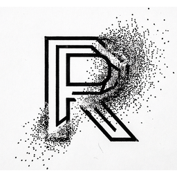

Ошибка загрузки
Проверьте адрес и подключение к интернету.

Минималистичный браузер. 0.16.0.
Вкладки, история, закладки и настройки уже работают. 0.16.0
Данные
Коллекция
Добавляйте страницы звездой в адресной строке.
Поведение
Проект
Минималистичный браузер на Rust и WebView2. Без телеметрии и фоновой сетевой активности.
Файлы
Файлы сохраняются в папку «Загрузки». Отсюда можно открыть файл или папку.